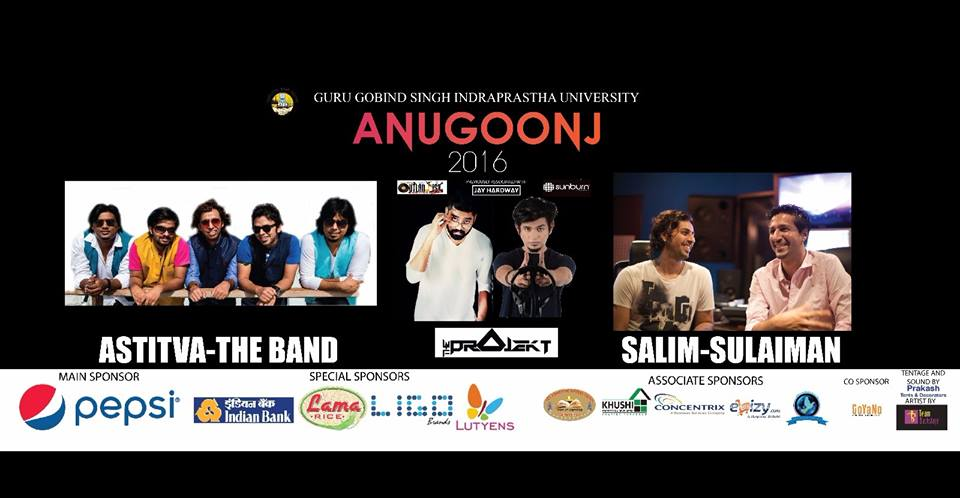
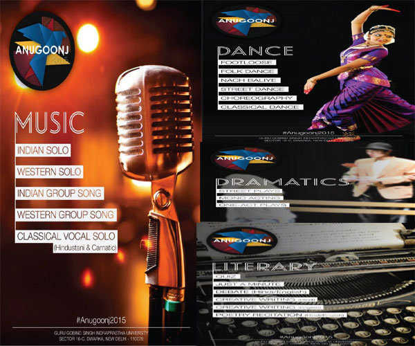

About Anugoonj
1. Anugoonj 2017
18th Annual fest of Guru Gobind Singh Indraprastha University.
Anugoonj is one of the biggest cultural fests in Delhi with 120+ colleges and a whopping 80,000 students taking part. This is the competition for which participants train all year round.The name ″Anugoonj″ literally translates to ″Echoing of the Small Efforts″ and in accordance with this meaning, students get an opportunity to realize their hidden talents and get a chance to receive appreciation for their work.
Audiences are enthralled by the performances these young entertainers put up and a large number of students attend this mega-event to witness the show of raw talent put up by students of different colleges of IPU. Anugoonj provides a platform for all round development as competitions range from literary debate-like events to creative artistic events like on the spot painting. GGSIPU is not only determined in delivering world class academics but also in providing opportunities to students to develop new talents and development in the field of co-curricular events which help students in the long run.Entry Procedures:-
- Only for students of IP University with proved identity(don't forget to bring your id cards).
- For Alumni of the University through guest list only. RSVP to anugoonj2k16@gmail.com with your college and batch details.
- No entry provisions for non IP students.

2. Anugoonj 2016
17th Annual fest of Guru Gobind Singh Indraprastha University.
Anugoonj is one of the biggest cultural fests in Delhi with 120+ colleges and a whopping 65,000 students taking part. This is the competition for which participants train all year round.The name ″Anugoonj″ literally translates to ″Echoing of the Small Efforts″ and in accordance with this meaning, students get an opportunity to realize their hidden talents and get a chance to receive appreciation for their work.
Audiences are enthralled by the performances these young entertainers put up and a large number of students attend this mega-event to witness the show of raw talent put up by students of different colleges of IPU. Anugoonj provides a platform for all round development as competitions range from literary debate-like events to creative artistic events like on the spot painting. GGSIPU is not only determined in delivering world class academics but also in providing opportunities to students to develop new talents and development in the field of co-curricular events which help students in the long run.
Entry Procedures:-
- Only for students of IP University with proved identity(don't forget to bring your id cards).
- For Alumni of the University through guest list only. RSVP to anugoonj2k16@gmail.com with your college and batch details.
- No entry provisions for non IP students.

3. Anugoonj 2015
Anugoonj, the Annual Cultural Fest of GGSIPU which is schedule to be held from February 28- March 2, 2015. The event is re-scheduled due to the General Election to the Legislative Assembly on February 7, 2015. Prior it was scheduled to be held on February 5-7. Kindly mark the new dates on your calendar
To make the Anugnooj as successful as before University invites active participations from the students. Regarding this a meeting is conducted on January 22, 2015 to discuss all event related issues ad agenda. More information is available
The experience of Anugoonj came up with exciting events like performances by various bands including famous one The Euphoria and Parikrama. There were play titled Charandas Chor and many more. Anugoonj 2015 highlights:
Footfall of around 60, 000 students from more than 110 affiliated colleges
Wide media coverage
Full day activities
Attractions for youth crowd
Expecting total number of youth to visit the festival is between twenty to thirty thousand per day
Eminent scholars visiting the event
Opening and closing ceremony will mark the presence of celebrities and prestigious personalities
Excellent platform to promote one’s product
